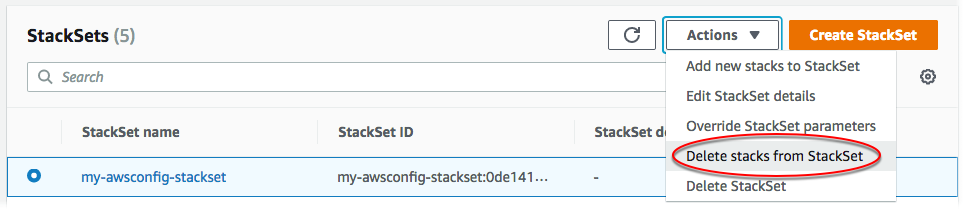

Die vorliegende Übersetzung wurde maschinell erstellt. Im Falle eines Konflikts oder eines Widerspruchs zwischen dieser übersetzten Fassung und der englischen Fassung (einschließlich infolge von Verzögerungen bei der Übersetzung) ist die englische Fassung maßgeblich.
Löschen von Stack-Instances aus dem Stack-Set
Sie können Stack-Instances entweder mithilfe der AWS Management Console oder mithilfe von AWS CloudFormation-Befehlen in der AWS CLI aus einem Stack-Set löschen. Bei diesem Verfahren löschen wir alle Stacks.
Bei einem Stack-Set mit serviceverwalteten Berechtigungen wird, wenn Sie Stack-Instances aus einer Organisationseinheit (OU) der obersten Ebene löschen, die OU als Ziel des Stack-Sets entfernt.
Themen
Löschen von Stack-Instances mithilfe der AWS Management Console
Öffnen Sie die AWS CloudFormation-Konsole unter https://console.aws.amazon.com/cloudformation
. -
Wählen Sie im Navigationsbereich StackSets aus. Wählen Sie auf der StackSets-Seite das Stack-Set aus, das Sie in Erstellen eines Stack-Sets erstellt haben.
-
Wählen Sie nach Auswahl des Stack-Sets die Option Delete stacks from StackSet (Stacks aus StackSet löschen) im Menü Actions (Aktionen) aus.
 -
Wählen Sie auf der Seite Set deployment options (Bereitstellungsoptionen festlegen) die Konten aus, aus denen Stack-Instances gelöscht werden sollen.
-
[Selbstverwaltete Berechtigungen] Wählen Sie für Accounts (Konten) die Option Deploy stacks in accounts (Stacks in Konten bereitstellen) aus. Fügen Sie Ihre Zielkonto-Zahlen in das Textfeld ein und trennen Sie dabei die einzelnen Zahlen durch Kommas.
[Serviceverwaltete Berechtigungen] Wählen Sie für Accounts (Konten) die Option Deploy stacks in organizational units (Stacks in Organisationseinheiten bereitstellen) aus. Fügen Sie die IDs der OUs ein, die Ihr Stack-Set anvisiert.
Anmerkung
StackSets löscht auch Stack-Instances von untergeordneten OUs der angegebenen Ziel-OUs.

-
Wählen Sie unter Deployment regions (Bereitstellungsregionen) die Regionen aus, aus denen Sie Stack-Instances löschen möchten. In diesem Fall ist dies Region USA Ost (N.-Virginia) und Region USA West (Oregon).
-
Für Deployment options (Bereitstellungsoptionen):
-
Für Maximum concurrent accounts (Maximale Anzahl paralleler Konten) behalten Sie die Standardwerte Number (Zahl) und 1 bei.
-
Behalten Sie für Failure tolerance (Fehlertoleranz) die Standardwerte Number (Zahl) und 0 bei.
Behalten Sie im Bereich Retain stacks (Stacks beibehalten) die Standardeinstellung („disabled (deaktiviert)“) bei.
Beim Löschen von Stacks aus einem Stack-Set erlaubt Ihnen die Option Retain stacks, die Stack-Instances aus Ihrem Stack-Set zu entfernen, während die Stacks und die damit assoziierten Ressourcen gespeichert werden. Wenn Sie Stacks in einem Stack-Set mithilfe der Option Retain stacks speichern, behalten die Ressourcen des Stacks ihren aktuellen Status bei, aber der Stack ist danach kein Bestandteil des Stack-Sets mehr. Informationen zum erneuten Zuordnen eines Stacks oder Hinzufügen eines vorhandenen Stacks zu einem Stack-Set finden Sie unter Importieren eines Stacks in AWS CloudFormation-StackSets.
Wählen Sie Next (Weiter).
-
-
-
Überprüfen Sie auf der Seite Review (Überprüfen) Ihre Auswahl und wählen Sie anschließend Submit (Einsenden) aus.
-
Nach dem Löschen der Stacks können Sie auf der StackSet-Detailseite auf der Registerkarte Stack instances (Stack-Instances) überprüfen, ob Stack-Instances aus Ihrem Stack-Set gelöscht wurden.

Löschen von Stack-Instances mithilfe der AWS CLI
Wenn Sie als delegierter Administrator handeln, müssen Sie den Parameter --call-as jedes Mal auf DELEGATED_ADMIN festlegen, wenn Sie einen StackSets-Befehl ausführen.
--call-asDELEGATED_ADMIN
-
Führen Sie den Befehl
delete-stack-instancesaus. Geben Sie für--stack-set-nameden Stack-Set-Namenmy-awsconfig-stacksetan.Legen Sie die Fehlertoleranz und die maximale Anzahl gleichzeitiger Konten fest, indem Sie im Parameter
FailureToleranceCountwie im folgenden Beispiel den Wert für0aufMaxConcurrentCountund für1auf--operation-preferencesfestlegen. Wenn Sie stattdessen Prozentwerte sehen möchten, verwenden SieFailureTolerancePercentageoderMaxConcurrentPercentage. Für die Zwecke dieser Anleitung verwenden wir die Anzahl und keine Prozentwerte.Anmerkung
Der Wert von
MaxConcurrentCounthängt vom Wert vonFailureToleranceCountab.MaxConcurrentCountist höchstens eins mehr alsFailureToleranceCount.Da
--retain-stacksein erforderlicher Parameter vondelete-stack-instancesist, sollten Sie--no-retain-stackshinzufügen, wenn Sie keine Stacks beibehalten (speichern) möchten. Im Rahmen dieses Walkthroughs fügen wir den Parameter--no-retain-stackshinzu, da wir keine Stacks beibehalten.[Selbstverwaltete Berechtigungen] Ersetzen Sie
account_IDdurch die Konten, mit denen Sie Ihren Stack in Erstellen eines Stack-Sets erstellt haben.aws cloudformation delete-stack-instances --stack-set-name my-awsconfig-stackset --accounts '["0123456789012"]' --regions '["eu-west-1"]' --operation-preferences FailureToleranceCount=0,MaxConcurrentCount=1 --no-retain-stacks[Serviceverwaltete Berechtigungen] Geben Sie für
--deployment-targetsdie Organisations-(Stamm-)ID oder OU-IDs an, in denen Sie Stack-Instances erstellt haben.Anmerkung
StackSets löscht auch Stack-Instances von untergeordneten OUs der angegebenen Ziel-OUs.
aws cloudformation delete-stack-instances --stack-set-name my-awsconfig-stackset --deployment-targets OrganizationalUnitIds='["ou-rcuk-1x5jlwo", "ou-rcuk-slr5lh0a"]' --regions '["eu-west-1"]' --no-retain-stacks -
Optional können Sie nach Abschluss des Löschvorgangs überprüfen, ob die Stack-Instances tatsächlich aus dem Stack-Set gelöscht wurden, indem Sie den Befehl
describe-stack-set-operationausführen. Mit diesem Befehl werden der Status und die Ergebnisse der Operation zum Löschen von Stacks angezeigt. Verwenden Sie als--operation-iddie Operations-ID, die durch den Befehldelete-stack-instanceszurückgegeben wurde.aws cloudformation describe-stack-set-operation --stack-set-namestackSetName--operation-idddf16f54-ad62-4d9b-b0ab-3ed8e9example